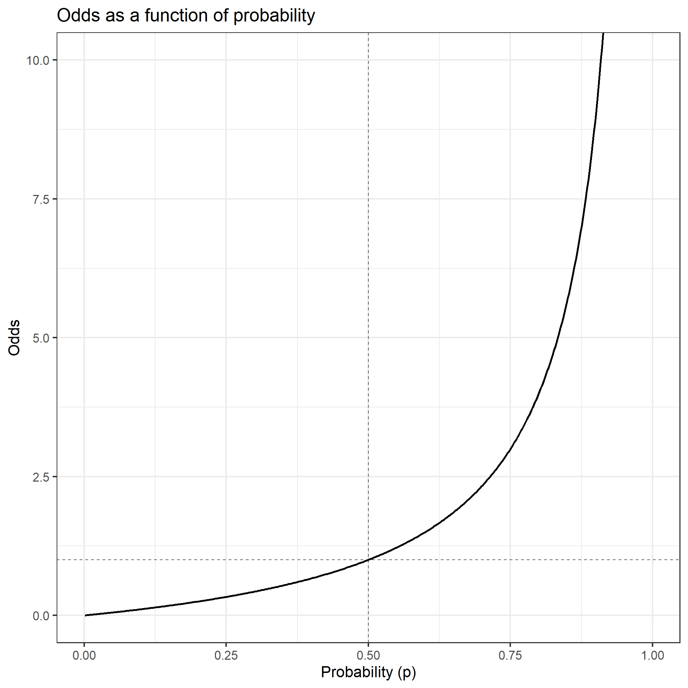

Estimating Risk: Is There an Association?
Absolute Risk, Relative Risk, and Odds Ratios
Learning goals
By the end of this lecture, you should be able to:
- Define absolute risk as incidence
- Compute and interpret relative risk (RR)
- Compute and interpret risk difference (RD)
- Define odds and odds ratios (OR)
- Explain when the OR approximates the RR
- Recognize how study design determines which measures are valid
Big picture: why estimate risk?
- Epidemiology is fundamentally comparative
- We ask: Is there excess risk associated with an exposure?
- Excess risk can be described in multiple ways
Choice of measure affects interpretation.
Absolute risk
- Absolute risk = incidence of disease in a group
- Answers: How common is this outcome?
Real-World Example: A woman contracts Rubella during her first trimester. Her doctor says, “There is a 20% chance your child will have a birth defect or complication.”
- This is the absolute risk.
- It tells us the magnitude of the problem but not the excess risk due to Rubella.
Why absolute risk is not enough
- Absolute risk does not compare exposed vs unexposed
- To understand if Rubella causes a defect, we need to know the risk in women who didn’t have Rubella.
- Even this may not be sufficient to make the comparison.
- What if contracting Rubella is related to other risk factors for birth defects?
- Comparison is essential to establish association, but it’s not sufficient to establish causality.
Motivating example: foodborne outbreak
At a picnic, attendees ate various foods.
| Food Item | Ate (% Sick) | Did Not Eat (% Sick) |
|---|---|---|
| Egg salad | 83% | 30% |
| Macaroni | 76% | 67% |
| Cottage cheese | 71% | 69% |
| Tuna salad | 78% | 50% |
| Ice cream | 78% | 64% |
Question:
- Which food is associated with illness?
- Both have sick people in both groups, but the difference and ratio are much larger for the Egg Salad.
Motivating example: smoking and CHD
Now let’s look at chronic disease. This data comes from a classic cohort study of smoking and Coronary Heart Disease (CHD).
| Exposure Group | Developed CHD | No CHD |
|---|---|---|
| Smokers | 84 | 2,916 |
| Nonsmokers | 87 | 4,913 |
| Exposure Group | Developed CHD (%) | No CHD (%) |
|---|---|---|
| Smokers | 2.80% | 97.20% |
| Nonsmokers | 1.74% | 98.26% |
Question:
- Is there an association between smoking and CHD?
- The absolute differences are small, but the ratios are large.
Ways to summarize risk (with a 2x2 table)
| Disease | No disease | Total | |
|---|---|---|---|
| Exposed | a | b | a+b |
| Not exposed | c | d | c+d |
We define:
- Risk in exposed: \(I_E = \frac{a}{a+b},\)
- Odds in exposed: \(I_E/(1-I_E) = \frac{a/(a+b)}{b/(a+b)} = \frac{a}{b}\)
- Risk in nonexposed: \(I_U = \frac{c}{c+d}\)
- Odds in nonexposed: \(I_U/(1-I_U) = \frac{c/(c+d)}{d/(c+d)} = \frac{c}{d}\)
We can summarize the excess risk with the following metrics:
- Risk difference: \(RD = I_E - I_U\)
- Relative risk: \(RR = \frac{I_E}{I_U} = \frac{a/(a+b)}{c/(c+d)} = \frac{a(c + d)}{c(a + b)}\)
- Odds Ratio: \(OR = \frac{I_E/(1-I_E)}{I_U/(1-I_U)}= \frac{I_E(1-I_U)}{I_U(1-I_E)}= \frac{a/b}{c/d} = \frac{ad}{cb}\)
- Efficacy: \((1 - RR) \times 100%\)
Risk Difference (RD)
Often more relevant for public health decisions.
Definition:
\[ RD = \text{Risk in exposed } - \text{ Risk in nonexposed} \]
Interpretation:
- \(RD = 0\): no association
- \(RD > 0\): positive association
- \(RD < 0\): negative (protective) association
- How many extra cases occur due to exposure?
RD Example: smoking and CHD
Data from a hypothetical cohort:
- Smokers: 84 CHD cases / 3,000 people, 2.8%.
- Nonsmokers: 87 CHD cases / 5,000 people, 1.74%.
Compute by hand: - \(RD?\) - \(RD = 0.028 - 0.0174 = 0.0106 = 1.06\%\) - What does this mean?
Relative risk (RR)
Definition:
\[ RR = \frac{\text{Risk in exposed}}{\text{Risk in nonexposed}} \]
Interpretation:
- \(RR = 1\): no association
- \(RR > 1\): positive association
- \(RR < 1\): negative (protective) association
- Proportional disease risk change in the exposed relative to nonexposed group?
- A \(RR = 1.5\) \(\rightarrow\) 50% increase in cases in exposed group.
- A \(RR = 0.6\) \(\rightarrow\) 40% decrease in cases in exposed group.
RR Example: smoking and CHD
Data from a hypothetical cohort: - Smokers: 84 CHD cases / 3,000 people, 2.8%. - Nonsmokers: 87 CHD cases / 5,000 people, 1.74%.
Compute by hand: - \(RR?\) - \(RR = \frac{0.028}{0.0174} = 1.609\) - What does this mean?
Interpretation of RR
An \(RR = 1.61\) means:
The risk of CHD among smokers is 61% higher than among nonsmokers.
Note:
- RR does not tell us how common CHD is
- RR does not imply causality by itself
Odds Ratio (OR)
Definition:
\[\begin{equation*} \begin{aligned} OR &= \frac{\text{Risk in exposed}/(1 - \text{Risk in exposed})}{\text{Risk in nonexposed}/(1 - \text{Risk in nonexposed})} \\ &\\ &= \frac{\text{Risk in exposed }(1 - \text{Risk in nonexposed})}{\text{Risk in nonexposed }(1 - \text{Risk in exposed})} \\ \end{aligned} \end{equation*}\]
Interpretation: \(OR = 1\): no association, \(OR > 1\): positive association, \(OR < 1\): negative (protective) association
- How much larger are the odds of disease in the exposed group relative to the nonexposed group?
- An \(OR = 1.5\) \(\rightarrow\) disease odds are 50% higher in exposed group (not the same as risk).
- An \(OR = 0.6\) \(\rightarrow\) disease odds are 40% lower in exposed group.
OR Example: smoking and CHD
Data from a hypothetical cohort: - Smokers: 84 CHD cases / 3,000 people, 2.8%. - Nonsmokers: 87 CHD cases / 5,000 people, 1.74%.
Compute by hand: - \(OR?\) - \(OR = \frac{0.028/0.972}{0.0174/0.986} = 1.6320\) - What does this mean? - Why is it so close to the RR?
When does OR approximate RR?
| Disease | No disease | Total | |
|---|---|---|---|
| Exposed | a | b | a+b |
| Not exposed | c | d | c+d |
- Relative risk: \(RR =\frac{a(c + d)}{c(a + b)}\)
- Odds Ratio: \(OR = \frac{ad}{cb}\)
When the disease is rare:
- \(a \ll b\) and \(c \ll d\)
- \((a+b) \approx b\), \((c+d) \approx d\)
Then: \(RR \approx OR\)
Visual intuition: rare vs common disease
- Rare disease → OR ≈ RR
- Common disease → OR exaggerates RR
Important for interpretation of published studies.
Probability vs odds
If probability is \(p\):
\[ \text{Odds} = \frac{p}{1-p} \]
Key properties:
- Odds increase nonlinearly as \(p\) increases
- Odds = 1 when \(p = 0.5\)
- Odds \(\to \infty\) as \(p \to 1\)
Example:
- \(p = 0.60\)
- \(\text{odds} = \frac{0.60}{0.40} = 1.5\)
Odds and odds ratios: why introduce them?
- In cohort studies, we can compute RR directly
- In case–control studies, we cannot compute the RR
- We don’t know disease incidence in exposed and unexposed groups because we start with those who have the disease.
- But we can compute odds ratios.


Odds Ratios in Observational Studies
| Disease | No disease | Total | |
|---|---|---|---|
| Exposed | a | b | a+b |
| Not exposed | c | d | c+d |
In a cohort study: \(OR =\frac{\text{odds disease if exposed}}{\text{odds no disease if exposed}} = \frac{a/b}{c/d} = \frac{ad}{bc}\)
In a case–control study: \(OR = \frac{\text{odds case was exposed}}{\text{odds control was exposed}} = \frac{a/c}{b/d} = \frac{ad}{bc}\)
- The Cross-Product Ratio:
- In cohort studies, we are calculating the ratio of the odds of disease in the exposed relative to nonexposed groups.
- In case-control studies, we are actually calculating the ratio of the odds of exposure in the diseased relative to the no disease group.
Why OR works in case–control studies
- We fix the number of cases and controls
- Incidence is not recoverable
- Exposure odds are comparable
- OR still measures association, not risk.
By-hand example: same RD, different RR
Community A: - \(I_E = 40\%\), \(I_U = 10\%\)
Community B: - \(I_E = 90\%\), \(I_U = 60\%\)
Both have:
- \(RD = 30\%\)
But:
\(RR_A = 4.0\)
\(RR_B = 1.5\)
Which community shows a stronger association?
- What does “stronger” mean here?
- RD answers “how many more cases?”
- RR answers “how much larger is the risk?”
Exercise: The Salk Polio Vaccine (1954)
In one of the largest public health experiments in history, children were assigned to receive either the Salk vaccine or a placebo. We want to know if the vaccine is associated with a lower risk of paralytic polio.
Your Tasks:
- Calculate the Incidence (Risk) per 100,000 for both groups.
- Calculate the Relative Risk (RR).
- Interpret the RR: Is the vaccine “protective”?
- By what percentage did it reduce the risk?
| Group | Paralytic Polio (Cases) | Total Children |
|---|---|---|
| Vaccinated | 33 | 200,745 |
| Placebo | 115 | 201,229 |
Exercise Solution
Step 1: Calculate Risks (\(I_E\) and \(I_U\)) - \(I_{Vaccinated} = 33 / 200,745 = \mathbf{0.000164}\) (16.4 per 100,000) - \(I_{Placebo} = 115 / 201,229 = \mathbf{0.000571}\) (57.1 per 100,000)
Step 2: Calculate Relative Risk \[RR = \frac{16.4}{57.1} = 0.287\]
Step 3: Interpretation - Because \(RR < 1\), the exposure (vaccine) is protective. - Children who were vaccinated had only 28.7% of the risk compared to the placebo group. - Efficacy: \((1 - RR) \times 100 = \mathbf{71.3\%}\) reduction in risk.
R Example: Real-World Data with esoph
We will use the built-in esoph dataset, which contains data from a case-control study of esophageal cancer in France. We’ll compare:
- High Alcohol Consumption (120+ g/day) to
- Low Consumption (0-39 g/day)
agegp alcgp tobgp ncases ncontrols
1 55-64 40-79 20-29 4 13
2 35-44 0-39g/day 0-9g/day 0 60
3 25-34 40-79 0-9g/day 0 27
4 25-34 0-39g/day 20-29 0 6
5 45-54 40-79 0-9g/day 6 32
6 75+ 120+ 0-9g/day 2 0
7 45-54 80-119 30+ 2 2
8 65-74 80-119 10-19 4 8
9 35-44 80-119 10-19 0 6
10 55-64 0-39g/day 20-29 3 9R Example: esoph (continued)
# A tibble: 2 × 3
Status Cases Controls
<chr> <dbl> <dbl>
1 Exposed 45 22
2 Not exposed 29 386Thinking like an Epidemiologist
Look at the alcohol_table table we just generated in R. Before we run more code, we need to make two critical decisions:
- Which measure of association is valid here? - This is a Case-Control study.
- Can we calculate the “Total at Risk” in the general population?
- Should we use Relative Risk or the Odds Ratio?
- The Challenge:
- Use
alcohol_tableto compute the appropriate measure.
- Use
R Example: Verifying our Math
Now, let’s let R do the heavy lifting.
| Disease | No disease | |
|---|---|---|
| Exposed | a | b |
| Not exposed | c | d |
In a case–control study: \(OR = \frac{\text{odds case was exposed}}{\text{odds control was exposed}} = \frac{a/c}{b/d} = \frac{ad}{bc}\)
Comparison of Measures of Association
| Feature | Risk Difference (RD) | Relative Risk (RR) | Odds Ratio (OR) |
|---|---|---|---|
| What it Emphasizes | Absolute impact & number of excess cases | Strength of association & proportional change | Association under design constraints |
| Key Strengths | Easy interpretation; best for policy & planning | Intuitive comparison; standard for cohort studies | Valid for case-control studies; math properties |
| Limitations | Can look small even if the association is strong | Hides baseline risk; ignores absolute impact | Not intuitive; exaggerates risk if disease is common |
| Best Used For… | Assessing Public Health impact | Understanding exposure–disease associations (Cohort) | Understanding exposure–disease associations (Case-Control) |
Discuss in small groups: advantages and disadvantages
- Which measure would be most misleading if reported alone?
- What does each measure hide?
- RD hides ________
- RR hides ________
- OR hides ________
- Which measure would matter most for:
- a patient?
- a population?
- a headline?
- What additional information would you want reported?
- The choice of summary shapes interpretation.
Which measure should you report?
Imagine a drug reduces the risk of a rare side effect from 2 in 1,000,000 to 1 in 1,000,000.
- Relative Risk: “The drug cuts the risk of side effects by 50%!” (Sounds huge)
- Risk Difference: “The drug prevents 1 case per million.” (Sounds tiny)
Key Takeaway: As an epidemiologist, you often need to report both to give a complete picture. One tells you about the biological strength (RR), the other tells you about the clinical relevance (RD).
Common pitfalls
- Interpreting OR as RR
- Ignoring absolute risk
- Confusing association with causation
Wrap-up
- Absolute risk describes how common disease is
- RR and RD describe excess risk
- OR is essential for case–control studies
- Study design determines what can be estimated
- Cohort study → RD, RR, OR all valid
- Case–control study → OR only
- Cross-sectional → prevalence ratios
Next: Diagnostics
Bonus Material
Matched case–control studies: setup
In a matched case–control study:
- Each case is paired with a control
- The pair is matched on variables like:
- age
- sex
- clinic / calendar time
Goal of matching: - Control confounding by design - Make cases and controls comparable on the matched factors
Key shift:
We compare exposure within matched pairs, not across unmatched groups.
What is a discordant pair?
A discordant pair is a matched case–control pair in which:
- One member was exposed
- The other member was not exposed
These pairs are informative because they distinguish cases from controls with respect to exposure.
Only discordant pairs contribute to the matched odds ratio.
Matched pairs: the four possibilities
For a binary exposure (Exposed / Not exposed), each matched pair falls into one of four types:
| Case | Control | Pair type | Informative? |
|---|---|---|---|
| Exposed | Exposed | Concordant | No |
| Not exposed | Not exposed | Concordant | No |
| Exposed | Not exposed | Discordant | Yes |
| Not exposed | Exposed | Discordant | Yes |
Why concordant pairs don’t help:
If both people in a pair have the same exposure, the pair provides no evidence about whether exposure is associated with being a case.
Defining (b) and (c)
| Control: Exposed | Control: Not exposed | |
|---|---|---|
| Case: Exposed | a | b |
| Case: Not exposed | c | d |
Among discordant pairs:
- \(b\) = # pairs where case exposed, control not exposed
- \(c\) = # pairs where control exposed, case not exposed
Only these pairs tell us whether exposure tends to occur more often in cases than controls.
Matched odds ratio
| Control: Exposed | Control: Not exposed | |
|---|---|---|
| Case: Exposed | a | b |
| Case: Not exposed | c | d |
The matched odds ratio is:
\[OR_{\text{matched}} = \frac{b}{c}\]
Interpretation:
- \(OR_{\text{matched}} = 1\): no association within pairs
- \(OR_{\text{matched}} > 1\): exposure more common in cases within pairs
- \(OR_{\text{matched}} < 1\): exposure more common in controls (protective)
Intuition: “Which side wins more often?”
Think of discordant pairs as “votes”:
- If the case is exposed and the control is not → vote for exposure causing disease
- If the control is exposed and the case is not → vote against
Then:
\[OR_{\text{matched}} = \frac{\text{votes for}}{\text{votes against}} = \frac{b}{c}\]
Worked example
Suppose we have 50 matched pairs:
- 20 pairs: case exposed, control not → (b = 20)
- 5 pairs: control exposed, case not → (c = 5)
- 25 pairs: concordant → ignored
Compute:
\[OR_{\text{matched}} = \frac{20}{5} = 4\]
Interpretation:
Within matched pairs, cases had 4× the odds of exposure compared to controls.
Why you must analyze matched data differently
If you ignore matching and compute an unmatched OR:
- You can reintroduce confounding
- You answer a different question than the design intended
- The estimate can be biased
Key reminder:
Matching is a design choice — you must respect it in the analysis.